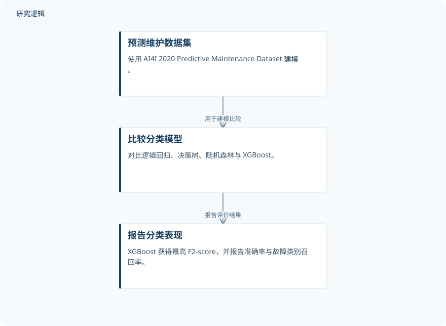

摘要解读
基于物理信息机器学习的预测性维护助手：机器故障风险预测与剩余使用寿命估计
Pengembangan Predictive Maintenance Copilot Berbasis Physics-Informed Machine Learning untuk Prediksi Risiko Kegagalan Mesin dan Estimasi Remaining Useful Life
解读更新 2026-11-09 13:02 · 依据公开摘要整理，未核验全文细节
预测性维护不仅要识别机器故障风险，还要帮助安排维护优先级。这项面向油气行业需求的研究，将风险预测、物理信息机器学习、剩余使用寿命估计与 AI Copilot 集成为决策支持原型；阅读重点是区分模型表现、系统可用性与工业现场有效性。
文章目录
从识别故障风险走向维护决策支持
油气行业需要能够识别故障风险、辅助确定行动优先级的维护策略。研究开发的 Predictive Maintenance Copilot 定位为决策支持系统原型，目标是把风险与寿命信息组织起来，支持维护信息呈现，而不是仅提供一个分类结果。
风险分类与寿命估计分别计算
研究采用以定量计算为主的混合研究方法，使用 AI4I 2020 Predictive Maintenance Dataset，对比逻辑回归、决策树、随机森林和 XGBoost。物理信息方法通过衍生特征与物理约束规则（physics guardrails）实现；摘要未展开这些特征和规则的具体形式。
剩余使用寿命（RUL）则依据刀具磨损、占空比与磨损增量单独计算，再与风险预测、物理信息机器学习及 AI Copilot 集成于原型中。因此，不能把摘要报告的分类性能直接视为寿命估计精度，也不能据此认定 AI Copilot 参与了模型训练。
依据摘要整理的风险模型比较流程


仅概括摘要明确报告的数据、模型比较与分类结果，不代表论文原图，也不涵盖原型的全部功能。
下载 SVG图示关系说明
实线表示相邻阶段的信息流，虚线表示跨阶段联系或反馈。
预测维护数据集 → 比较分类模型：用于建模比较；比较分类模型 → 报告分类表现：报告评价结果
XGBoost 分类表现领先，原型获得接受度反馈
摘要报告，XGBoost 获得最高的 F2-score，为 0,7373；其 accuracy 为 0,9489，故障类别 recall 为 0,9412。这里明确领先的是 F2-score，摘要没有给出其他模型的完整指标，不能扩展为所有评价维度均占优。
面向 10 名受访者的评估得到 90,8% 的接受度，全部软件测试均成功运行。作者据此认为，系统具有让维护信息呈现更有条理的潜力，但仍需使用实际工业机器数据验证。这些反馈不等同于已经证明现场停机减少或维护成本下降。
分类指标之外，现场适用性仍待确认
仅凭本次摘要，无法判断建模样本规模、数据划分、类别分布及比较模型的调参公平性，也无法确认物理约束带来的独立贡献。摘要未报告 RUL 的误差评估、受访者构成与接受度量表细节；这些是当前资料的边界，不代表论文没有开展相关工作。
阅读启发：分别看待风险、寿命与交互
阅读启发：后续阅读可重点追问，物理约束如何进入预测流程，独立计算的 RUL 如何与风险信息共同呈现，以及 AI Copilot 如何解释这些结果。应分别审视分类性能、寿命估计可信度和使用者接受度，避免将原型集成与积极反馈直接理解为工业应用效果。
以上为本站阅读启发与建议，不是论文已验证的结论。